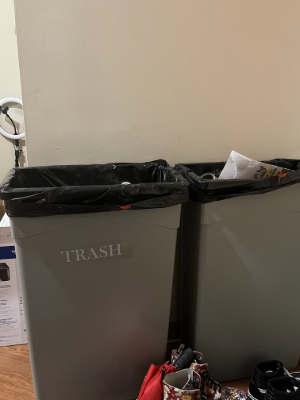
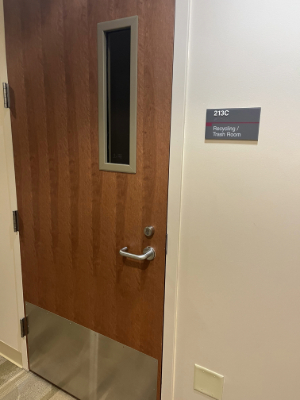
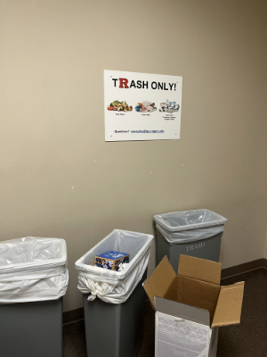
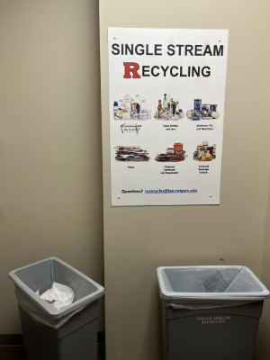

The Path of My Trash

Where the trash usually starts on its journey, in my own room's trash can.
Stepping outside my room and taking a 30 second walk brings us right outside the trash room.
Inside there is a designated trash area that is pretty large.
On the other side is a much smaller recycleables area, makes you wonder why it's smaller than the trash area.